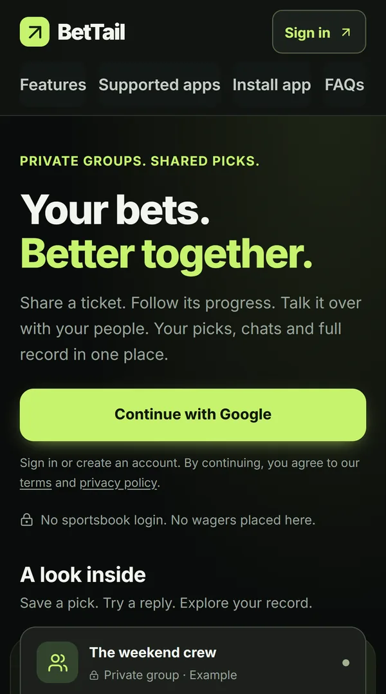

BetTail
A live web app where private groups share sports picks, follow them with their own stakes and track profit and leaderboards. Access control lives in the database: every request runs as the signed-in user under row-level security, and the app has no admin database key.
- Liveprivate groups track picks, results and leaderboards
- 6issues found and fixed in my security review
- 100%of exposed tables behind row-level security; no admin database key in the app
- AI reportsfrom Downfield on the NFL tab, through a report-only credential



Key decisionPut authorization in the database, not the app. Writes go through database functions that read the user from the session, so a direct API call gets the same checks the app does.
What it shows
Access control in the database
Row-level security on every exposed table, direct client writes denied, and default privileges revoked so new tables start private.
Money records that add up
Amounts in integer cents, profit calculated in SQL, and a receipt on every write so a retried request can't double-post.
Private live updates
Realtime messages carry no data. Clients reload through a membership check, so a removed member can't receive the group's records.
Tests on the real schema
Database tests run the actual migrations in embedded PostgreSQL, so roles, grants and row-level security are tested directly instead of mocked.
How it works
Friend groups usually share bets as screenshots in a group chat, which makes it hard to see who's up and what's still pending. BetTail gives each group one shared record. A member posts a pick, others follow it with their own stake and odds, and the database calculates profit, ROI and leaderboards.
Follow a request Choose a stage
Stage 01 / Member action
What is the browser asking for?
A member posts a pick by typing it, pasting a sportsbook link or uploading a screenshot. Numbers read from a screenshot need matching ticket text, and every inferred field stays editable.
The browser never decides ownership or money totals.
Stage 02 / Request checks
Who is asking, and is the request sane?
The server checks the session, the request's origin and its size. Upstream calls time out after 10 seconds, and writes are never retried automatically.
These checks sit in front of the database's own authorization, not in place of it.
Stage 03 / Database write
Is this member still allowed to do this?
Guarded SQL functions take the user from the session, check group membership, and write inside a transaction. PostgreSQL limits each user to 8 invite-code guesses and 60 writes a minute.
More logic in SQL means every migration needs review and real database tests.
Stage 04 / Live update
What leaves the database?
A realtime message only says that something changed. Each client reloads through a query that checks membership again.
Per-user limits stop one abusive account, not a distributed attack.
What my review found
I reviewed every migration, route, live permission and sign-in setting. Each finding below has a fix and a regression test.
| Finding | Before the fix | Now |
|---|---|---|
| NULL flag | A database function accepted SQL NULL for a flag, skipping its cache-only branch | NULL handled explicitly; a test proves nothing is queued |
| Write frequency | Newer functions had size caps but no per-user rate limit | Rate limits enforced in PostgreSQL, so direct API calls are covered too |
| Future tables | New tables could inherit app-role privileges | Default privileges revoked, verified in a rolled-back live transaction |
| Session cookies | Didn't explicitly require HTTPS | Secure, SameSite=Lax, host-only cookies everywhere |
| CSV export | Formula protection missed cells starting with a space or control character | Every formula-like cell neutralized before quoting |
| Backend calls | No deadline | 10-second timeout; writes never retried automatically |
AI research reports
The NFL tab shows reports from Downfield, my local AI research agent. It publishes through its own short-lived, report-only credential, so it never gets a member's login or any database access. Live sportsbook prices come from server-only code; the price-feed API keys live in Vercel's server environment and never reach the browser or the agent. BetTail tracks picks; it doesn't place bets.
Limits
- Per-user rate limits stop one abusive account, not a distributed attack.
- The sportsbook handoff still needs testing on physical iOS and Android phones.
- The security review is my own; the app hasn't had an outside test.
Discuss BetTail
Ask about row-level security, the database functions behind every write or how the AI reports are published.